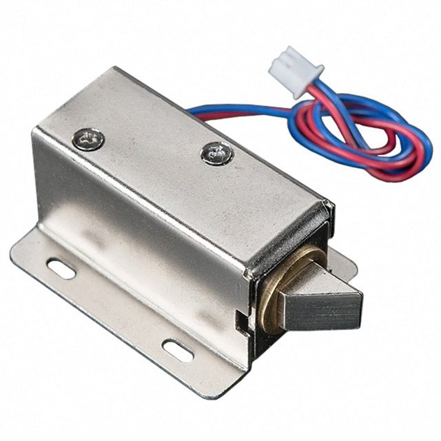
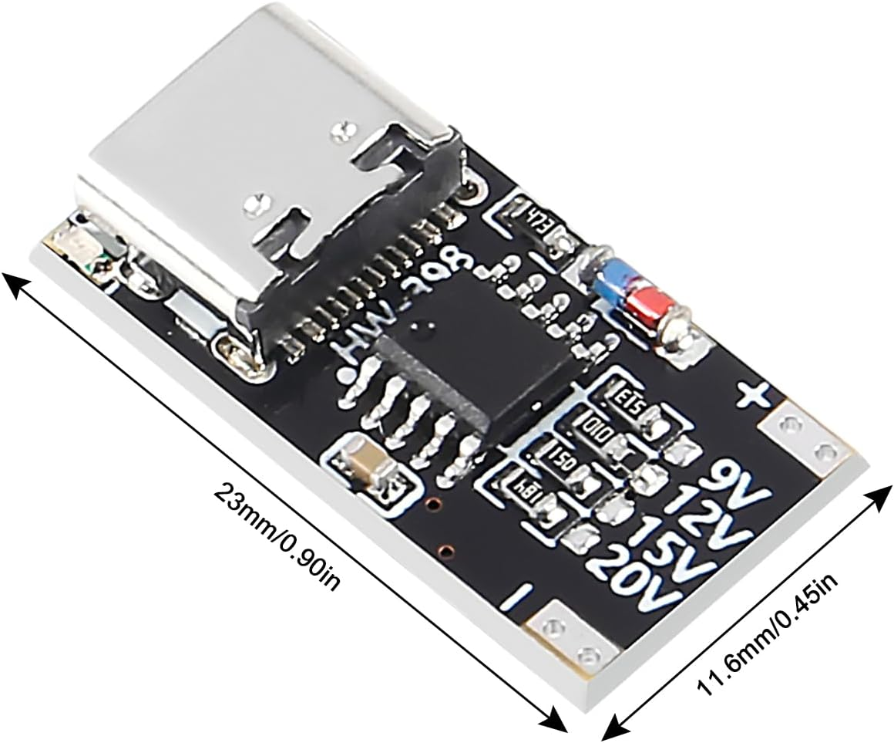

Lokaverkefni
Föstudagurinn 15. nóvember 2024 kl. 14:10
Fyrsta uppkast
Í þessari viku skissar þú upp hugmynd að lokaverkefni í Fab Academy. Best er að hafa nokkrar hugmyndir í takinu og nota kröfurnar um lokaverkefni til að velja eina af þeim:
- Your project should incorporate
- 2D and 3D design,
- additive and subtractive fabrication processes,
- electronics design and production,
- embedded microcontroller interfacing and programming,
- system integration and packaging
- Where possible, you should make rather than buy the parts of your project
- Projects can be separate or joint, but need to show individual mastery of the skills, and be independently operable
(úr Fab Academy 2024 með fyrirvara um breytingar 2025)
Góð dæmi um lokaverkefni eru hér.
Innblástur úr Fab Academy 2024
Ég mæli líka með að skoða sýnidæmin sem Neil hefur útbúið í output devices, input devices og networking til að sjá hvers konar rafeindaíhluti við erum að nota og hvað þeir geta gert. Á þessum síðum getið þið ýtt á Ctrl+F og leitað að "video" til að sjá örstutt myndbönd af því hvað rásirnar gera.
Ef þér gefst tími til, þá er góð hugmynd að skoða vikuverkefnin í Fab Academy, velta fyrir sér hvað þig langar að gera og athuga hvort það þurfi eitthvað þurfi að panta. Hér er dagskráin; verkefni hverrar viku er að finna neðst á síðunum.
Inventory
Taktu líka saman lista af efnum og íhlutum sem þarf að panta í lokaverkefnið áður en Fab Academy hefst.
Ef þig langar t.d. að nota Valchromat í staðinn fyrir krossvið í fræsingarvikunni (einn af nemendunum mínum í MÍ er t.d. að vinna í að smíða Layer Chair) eða tvílitað plexigler eða MDF til að fá ákveðinn effekt í laservikunni, þá þarf að panta það með góðum fyrirvara.

Örtölvur í Fab Academy
Hér er yfirlit yfir örtölvurnar sem þið hafið í Fab Lab Inventory. Vonandi hjálpar þetta með val á örtölvu fyrir lokaverkefnið.
Traustar:
- Arduino Uno er vinsælasta örtölvubrettið sem sögur fara af. Það er gott að eiga Arduino Uno þótt það sé ekki lengur í Fab Lab Inventory. ATmega328 örtölvan í Arduino Uno er komin til ára sinna og er ekki eins öflug og þær nýjustu, en það er mest til af upplýsingum, leiðbeiningum og hugbúnaði fyrir þessa örtölvu af þeim öllum. Það getur því verið gott að prófa hlutina fyrst með Arduino Uno, því að þá geturðu jafnan útilokað að örtölvan sé vandamálið.
Ódýrar:
- ATtiny412 er afar ódýr örtölva sem leynir á sér. Hún hentar vel til að gera einn hlut. Ég, Hafey og Andri notuðum ATtiny412 sýnidæmi frá Adrian Torres til að hanna bretti sem senda skilaboð sín á milli í Networking and Communications vikunni.
- Þegar tengja á fleiri hluti við örtölvuna er hægt að nota ATtiny1614 eða ATtiny3226, sem eru með fleiri pinna og fídusa.
- AVR128DB32 er ódýr en afar góð í að taka við mælingum frá analog skynjurum (er líklega með bestu analog-to-digital breytuna). Hér er dæmi um rás sem byggir á AVR128 örtölvu með öðruvísi fótspor.
- SAMD11 er nútímaleg ARM örtölva sem er hægt að tengja beint við USB, en það sem gerir henni erfitt fyrir er að hún fékk álíka lítið minni og ódýru ATtiny örtölvurnar. Forritapakkar (software libraries) nota annaðhvort ýmis trikk til að passa inn í takmarkanir ATtiny eða þeir eru skrifaðir fyrir öflugar ARM örtölvur og gera ráð fyrir nægu minni. Nemendur í Fab Academy hafa skrásett að minnið í SAMD11 sé fljótt að yfirfyllast ef maður bætir við einum eða tveimur forritapökkum t.d. til að stýra skjá eða Neopixel díóðum. Ef minnið yfirfyllist, þá er örtölvan orðin gagnslaus (þá þarf að minnka kóðann sem maður setur inn á hana til að fá hana til að virka). Bestu notin sem ég hef fundið fyrir SAMD11 er SAMD11 dual serial frá Quentin Bolsée, sem má nota til að forrita ATtiny örtölvu og eiga í serial samskiptum við hana á sama tíma. Kannski er best að hugsa um SAMD11 sem ATtiny412 sem getur talað beint við USB. USB samskipti eru aðalatriðið; og það er gott að láta þessa örtölvu fá eitt tiltölulega einfalt verkefni (og nota bene: analog-to-digital breytan í henni er jafngóð og í SAMD21).
Öflugar:
- Xiao RP2040 fyrir vinnslugetu
- Xiao ESP32-C3 fyrir WiFi
- Xiao SAMD21 er með afar góða analog-to-digital breytu til að lesa af skynjurum (SAMD21 er líka til sem stök örtölva í Fab Lab Inventory).
- Ég læt mína nemendur fá Raspberry Pi Pico W til að setja á brauðbretti og prófa að tengja hluti við. Hún er með RP2040 örtölvuna, marga pinna og WiFi. Ég mæli með þessum myndböndum til að læra MicroPython með Raspberry Pi Pico W (eða Xiao RP2040, ef maður sleppir WiFi hlutanum).
Mín meðmæli
Ég mæli sterklega með að nota staka örtölvu eins og ATtiny eða SAMD21 í lokaverkefninu, frekar en bretti eins og Xiao. Ástæðan er að þá ertu komin/n á hæsta stigið í rafrásagerð í Fab Academy. Þar til árið 2023 var alltaf gerð krafa um að setja örtölvuna á brettið, en núna má nota Xiao bretti og Raspberry Pi Pico W. Það er mjög þægilegt að nota þessi tilbúnu bretti, en þá kynnist þú ekki ákveðnum grundvallaratriðum.
Ég er ansi hrifinn af SAMD21. Að mínu mati er SAMD21 arftaki ATmega328P örtölvunnar sem er í Arduino Uno.
ATmega328P getur ekki staðið ein og sér; hún þarf kristal til að nota sem klukku og hún þarf líka USB-to-serial converter til þess að hægt sé að forrita hana í gegnum USB tengi.
SAMD21 er miklu öflugri og þægilegri. Hún er með þetta allt innbyggt. SAMD21 getur staðið ein og sér; eina aukaskrefið sem bætist við þegar maður notar SAMD21 er að setja bootloader á hana með forritara. Eftir það er hægt að forrita hana beint í gegnum USB tengi, og hún styður bæði við Arduino IDE og MicroPython. Hún er líka með mjög góða analog-to-digital breytu, sem gerir allar mælingar með analog skynjurum betri.
En fyrst og fremst er það mest töff að nota örtölvuna eina og sér og setja hana á brettið.
Aflgjafar fyrir lokaverkefnin í Fab Academy
Það er ekki gott að enda með lokaverkefni sem er bara hægt að setja í gang með bench power supply. Hér er dæmi um hvernig á ekki að gera þetta úr Machine Week 2023:
 Ég leyfi mér að nota þetta dæmi því að ég var í hópnum sem smíðaði tækið
Ég leyfi mér að nota þetta dæmi því að ég var í hópnum sem smíðaði tækið  .
.
 Ég leyfi mér að nota þetta dæmi því að ég var í hópnum sem smíðaði tækið .
Ég leyfi mér að nota þetta dæmi því að ég var í hópnum sem smíðaði tækið .
Þú þarft því aðeins að pæla í aflgjafa, svo að lokaverkefnið geti staðið eitt og sér.
Hversu mikið afl þarftu fyrir Neopixels ljósdíóður?
Í Neopixel Uberguide stendur að hámarksstraumnotkun hverrar Neopixel díóðu sé 60 milliamper.
Samkvæmt því þá getur þetta 3A USB hleðslutæki knúið allt að 50 Neopixels:
Það er ætti að duga í nánast hvað sem er.
Hversu mikið afl þarftu til að opna dyr?

Til að láta solenoid opna dyr þarftu um það bil 0,5A með 12V aflgjafa, skv þessu datasheet.
Nokkrir aflgjafar sem koma til greina
Hefðbundnir spennubreytar
- 3-12V 7.2W spennubreytir
- 3-12V 24W spennubreytir (líklega bestur miðað við verðið)
- 5-24V 36W spennubreytir
Ef þú kaupir svona spennubreyti þá þarftu líka að kaupa samsvarandi tengi til að setja á rafrásina þína.
Hleðslutæki með gamaldags USB-A tengi
Minnstu og ódýrustu USB hleðslutækin gefa bara 1A; það er nóg til að knýja ca. 16 Neopixels. Svoleiðis hleðslutæki eru ofan í skúffum á eiginlega öllum heimilum.
Öflugri hleðslutæki:
- 5V 2.4A USB-A hleðslutæki
- 5-12V 18W USB-A hleðslutæki (styður QC 3.0, sjá nánari upplýsingar hér)
- 5-12V 18W USB-A hleðslutæki (ódýrara, líklega best fyrir flest lokaverkefnin, styður QC 3.0, nánari upplýsingar hér)
- 5-12V 6A USB-A bílahleðslutæki (styður QC 3.0)
- 5V 2,4A USB-A power bank
Þessi hleðslutæki eru með gamaldags USB-A tengi. Síðan þarftu líka að kaupa USB-A framlengingarsnúru (eða venjulega USB-A í USB-A snúru og millistykki) sem liggur yfir í tækið þitt, og inni í tækinu verður USB Quick Charge hack rafrás sem gerir þér kleift að velja spennu fyrir tækið. Ef 5V spenna er nóg þá þarftu ekki USB Quick Charge hack rafrásina.
Hleðslutæki með nútíma USB-C tengi
- 5V 5A USB-C hleðslutæki (ég veit ekki hvort það styðji við hærri spennu með QC 3.0, en það gefur a.m.k. nægan straum við 5V spennu)
- 5-20V 65W USB-A og USB-C hleðslutæki (styður QC 3.0, sjá nánari upplýsingar hér)
- 5-12V 27W USB-C bílahleðslutæki (styður QC 3.0, getur gefið 18W með USB-A tenginu)
Þessi hleðslutæki eru með nútíma USB-C tengi. Þau eru öflugust. Ég á eftir að ganga úr skugga um að þau virki fyrir okkur. Síðan þurfið þið líka að kaupa USB-C framlengingarsnúru (það er að segja USB-A í USB-C snúru plús millistykki) sem liggur yfir í tækið þitt, og inni í tækinu verður USB Quick Charge hack rafrás sem gerir þér kleift að velja spennu fyrir tækið. Ef 5V spenna er nóg þá þarftu ekki USB Quick Charge hack rafrásina.
Batterí
Ef lokaverkefnið þarf að vera langt frá innstungu þá geturðu notað USB power bank. Ég hef ekki skoðað þá sjálfur.
Xiao ESP32C3 er með innbyggða battery management rás til að tengja 3,7V endurhlaðanlegt lithíum batterí við og hlaða.

USB Quick Charge hack
Ef þú ætlar að nota íhlut sem þarf hærri spennu en 5V, þá geturðu fengið hvaða spennu sem er á bilinu 3,6V-12V úr USB QC 3.0 hleðslutæki með því að búa til þessa rás. Þú snýrð stilliviðnáminu með skrúfjárni til að stilla spennuna. USB QC hack rásin kemur frá Nicholas de Coster í Fab Lab ULB í Brussel. Meiri upplýsingar koma síðar.
USB Power Delivery trigger bretti
Góð leið til að fá háa spennu og mikið afl út úr USB hleðslutæki er að nota USB PD trigger bretti. Hér er eitt sem hefur verið notað í Fab Lab netverkinu, svo að ég hugsa að það sé í lagi:

Brettið fæst á Amazon.
Út fyrir Fab Lab Inventory
Rafeindaíhlutir
Fab Lab Inventory er sett af vélum og íhlutum sem á að vera til í hverri Fab Lab smiðju. Mikil hugsun hefur farið í íhlutavalið til að bjóða upp á marga möguleika á eins einfaldan hátt og hægt er, og þannig að það sé hægt að endurtaka hlutina í öðrum smiðjum. Fab Lab Inventory er notaleg laug þar sem við lærum að synda. Í fjarska glittir í órólegt úthaf af rafeindaíhlutum þar sem er ýmislegt spennandi að sjá, en það getur auðveldlega gleypt byrjendur.
Þegar þú ferð út fyrir Fab Lab Inventory þarftu þið að bjarga þér upp á eigin spýtur. Ég gerði það í mínu lokaverkefni og fór mjög varlega í það.
Haustið þegar ég var að undirbúa mig fyrir Fab Academy hafði ég aldrei hannað rafrás, en ég gerði ráð fyrir að ég myndi læra nóg til að búa til rásirnar sem mig vantaði, svo lengi sem ég héldi mig við Fab Lab Inventory eða aðrar rásir með svipuð fótspor. Það gekk eftir.
Gott er að nota SOIC og önnur fótspor með a.m.k. 0,4 mm á milli pinna, svo að 1/64" fræsitönnin komist á milli þeirra þegar þú fræsir rásina. Það er hægt að fræsa fínni rásir með V-tönn, en það getur verið snúið. Fíngerðasta rásin sem ég notaði var DRV8313 mótorstýringin, sem er með HTSSOP fótspor. Ég held að það sé nokkurn veginn fíngerðasta fótspor sem er hægt að fræsa rás fyrir með góðu móti. Ég segi "með góðu móti". Ég gerði þó nokkrar litlar fræsitilraunir fyrst og fræsti síðan fimm heil bretti áður en eitt tókst; með síðustu V-tönninni sem við áttum.
Það sem ég passaði upp á í lokaverkefninu var að velja örtölvur og aðrar IC rásir sem eru með Arduino library og góð sýnidæmi, svo að ég myndi ekki rekast á vegg í forrituninni. Þess vegna byggði ég Baksabrettið á RGBB Modular Thing og SimpleFOC Mini. Ég blandaði þessum rásum einfaldlega saman og bætti við nokkrum íhlutum.

Og ég bætti við breakout til að gefa mér aðgang að fleiri pinnum á örtölvunni, ef ég skyldi vilja bæta einhverjum fídusum við eftir á. Það gæti komið sér vel fyrir þig líka. Breakout bretti er prentplata þar sem maður tengir litlu pinnana á IC rás beint við stærri pinna sem er auðvelt að setja á brauðbretti eða tengja jumper víra við.
Ég mæli með að eiga SMD íhlutabók, ég hugsa að hún hafi nýst best af því sem ég hef keypt.
Það er gott að eiga til Dupont Crimping Tool Kit til þess að setja tengi á víra.
Heat-set inserts fyrir þrívíddarprentaða hluti
Mekanískir íhlutir
Tevélin sem við smíðuðum í Machine Week 2023 er byggð á Beehive axes frá Quentin Bolsée:
Andri sýnir ykkur hvernig þið búið til Modular Things mótorstýribrettið hér.
Sem betur fer var ég búinn að panta Kevlar þráðinn sem við þurftum (bæði 0,6mm og 1mm ættu að virka og þið getið líka fundið Kevlar þráð á eBay). Fyrir Beehive axes þarf líka þrívíddarprentarahjól sem eru með tveimur legum inni í.
Til að byggja upp vélar úr nokkrum Modular Things getur komið sér vel að vera með USB hub með aflgjafa og USB framlengingarsnúrur.
Ég pantaði ýmislegt fleira fyrir Machine Week en þurfti ekki að nota það. Þetta sett bíður betri tíma. Kannski viljið þið nota það í Machine Week 2025.
Ég reyndi að panta skrúfulagerinn i Fab Lab Inventory hjá McMaster-Carr en fékk neitun frá fyrirtækinu. Ég mátti ekki panta frá Íslandi. Mjög óvenjulegt. En þá fann ég íhlutina bara miklu ódýrari á Aliexpress og þeir hafa komið sér mjög vel. Í inventoryinu eru bara 3 mm skrúfur en ég pantaði fleiri stærðir til að geta líka gert við ýmsa hluti sem koma á Reddingakaffið.
Hér er skrúfupöntunin:
Skrúfupöntunin
Þið þurfið kannski ekki allt þetta, en þetta er sáraódýrt og það er gott að panta núna strax, því að það tekur sinn tíma fyrir pakka að komast hingað með ódýrustu týpu af póstsendingu frá Kína.
Til að koma í veg fyrir að vera með margar lengdir af skrúfum í sama þvermáli þá reyndi ég að panta þær lengstu sem ég fann og síðan hef ég sagað af endunum á þeim og slípað, til að fá þær í réttar lengdir. Það er góð aðferð fyrir 3 mm skrúfurnar. Mjórri skrúfurnar klippi ég einfaldlega í sundur með svona græju og slípa síðan endann.
Ég pantaði líka pinna í nokkrum stærðum, sem er t.d. hægt að nota sem öxla í tæki eða sem „guides“ til að setja saman mót. Innblásturinn kom úr Guerilla Guide to CNC and Resin Casting.
Ég pantaði eitt sett af öllum þessum gerðum:
Pinnapöntunin
Ég pantaði sett af mjórri pinnum á Amazon og hef notað þá í eitt og annað, t.d. sem lamir fyrir box sem menntaskólanemendurnir mínir hafa búið til.
Efni

Ég er orðinn voða hrifinn af því að nota Renshape til að búa til lítil mót. Það er pólýúretan sem er fyllt með litlum ögnum, sem gera það að verkum að yfirborðið verður matt og flott beint eftir fræsingu. Maður sér ekki för eftir fræsitönnina. Ég fann þetta efni í Guerilla Guide to CNC and Resin Casting.
Það virkar líka vel að nota machinable wax. Það þarf að spyrja einhvern annan en mig um hvar er best að kaupa það.
Fyrir Molding and Casting vikuna lagði ég mikið á mig til að útvega sílíkonið og pólýúretanið sem er mælt með í Guerilla Guide to CNC and Resing Casting, en í Fab Lab Reykjavík eru þau farin að panta hjá Kemi (minnir mig) og þau efni eru víst þrusugóð líka. Ég hugsa að ég myndi kaupa þar næst sjálfur.
Næsta vika
Vika 5: Tölvuteikning